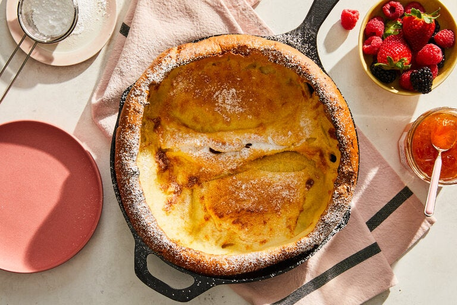

Dutch Baby

A personal sized pancake perfect for any meal. Warm and eggy.
Ingredients
- 3 eggs
- 1 teaspoon vanilla
- 1/4 teaspoon salt
- 1 tablespoon sugar
- 3/4 cup whole milk
- 1 tablespoon butter + 2 tablespoons for the pan
- 3/4 cup flour
- 1 tablespoon powdered sugar
Steps
- Preheat over to 400F
- Whisk together eggs, vanilla, salt, and sugar
- In a microwave safe container, combine milk and 1 tablespoon butter, heat
until butter is mostly melted (~60-90 seconds)
- Whisk flour into egg mixture, 1/4 cup at a time then slowly whisk in milk
mixture a small drizzle at a time.
- Place iron skillet (it MUST be an iron skillet that can go in the oven) on
the burner and turn to max heat. Melt 2 tablespoons of butter and coat the
bottom of the pan. Add batter to pan and immediate place in heated oven.
- Cook for 15 minutes or until edges are golden brown and center puffs up. It
will deflate once removed.
- Sprinkle with powdered sugar, cut into wedges, and enjoy.